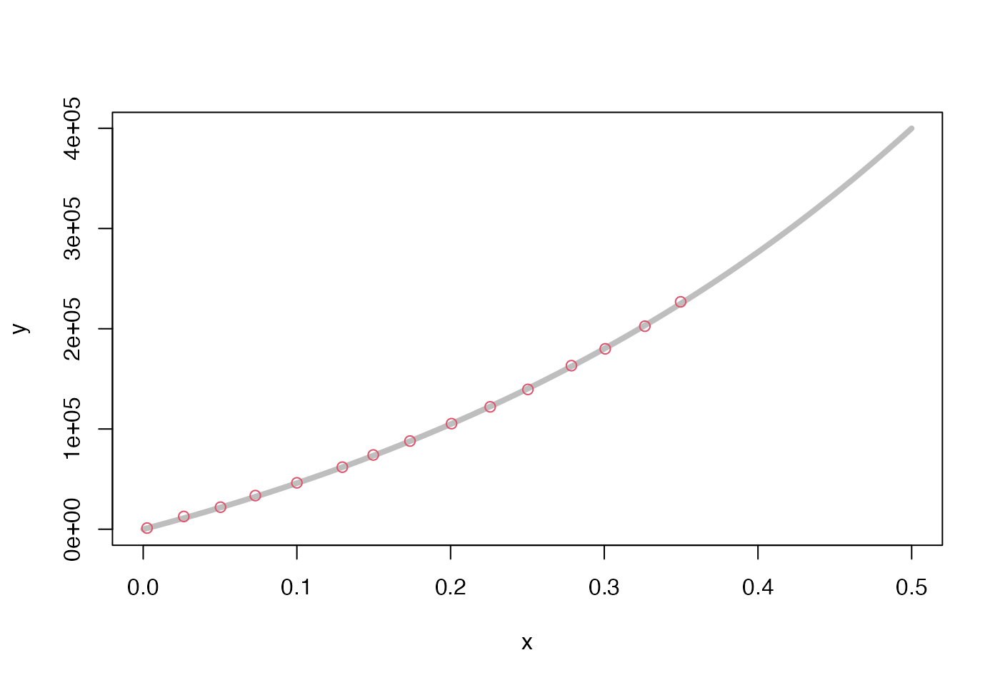

stressFromStrainFunction.RdDenoting unforced layer thickness in the \(i\) layer as \(l_i\) and strain there as \(\epsilon_i=\Delta l_i/l_i\), we may write the stress-strain relationship as $$\sigma = a_i*(exp(b_i*\epsilon_i)-1)$$ for each layer, where it is assumed that stress \(\sigma\) is equal across layers. Inverting this yields $$\epsilon_i= ln(1 + \sigma/a_i)/b_i$$ where \(ln\) is the natural logarithm. Therefore, the change \(\Delta L\) in the total thickness \(L=\sum l_i\) may be written $$0 = \Delta L - \sum((l_i/b_i) ln(1+\sigma/a_i))$$. Note that zero-thickness layers are removed from the calculation, to avoid spurious forces.
stressFromStrainFunction(l, a, b, N = 1000)vector of layer thicknesses
vector of multipliers
vector of e-fold parameters
integer specifying how many segments to use in the spline
A piecewise-linear function, created with approxfun(),
that returns stress as a function of total strain of the
system of compressing layers. For the purposes of the whale-strike
analysis, the strain should be between 0 and 1, i.e. there is
no notion of compressing blubber, etc. to negative thickness.
This expression is not easily inverted to get
\(\sigma\) in terms of \(\Delta L\)
but it may be solved
easily for particular numerical values, using uniroot().
This is done for a sequence of N values of strain \(\epsilon\)
that range from 0 to 1. Then approxfun() is used to create
a piecewise-linear representation of the relationship between \(\sigma\) and \(\Delta L\),
which becomes the return value of the present function.
(The purpose of using a piecewise-linear representation to reduce
computation time.)
library(whalestrike)
# Set blubber parameters for each layer, to see if
# we recover the raymond2007 data.
param <- parameters(a=rep(1.64e5,4), b=rep(2.47,4))
x <- seq(0, 0.5, length.out=100)
y <- param$stressFromStrain(x)
plot(x, y, type='l', lwd=4, col="gray")
data("raymond2007")
points(raymond2007$strain, raymond2007$stress, col=2)
